BEAUTY BASICS
November 23, 2017
I try to keep my makeup routine when on holiday simple and quick- less time on makeup= more time sipping cocktails by the beach!
My focus is always on having glowy, fresh skin, so most of the makeup products I bring on holiday are focused on that.
My focus is always on having glowy, fresh skin, so most of the makeup products I bring on holiday are focused on that.
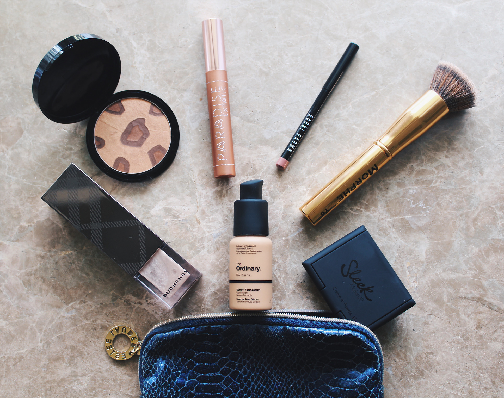
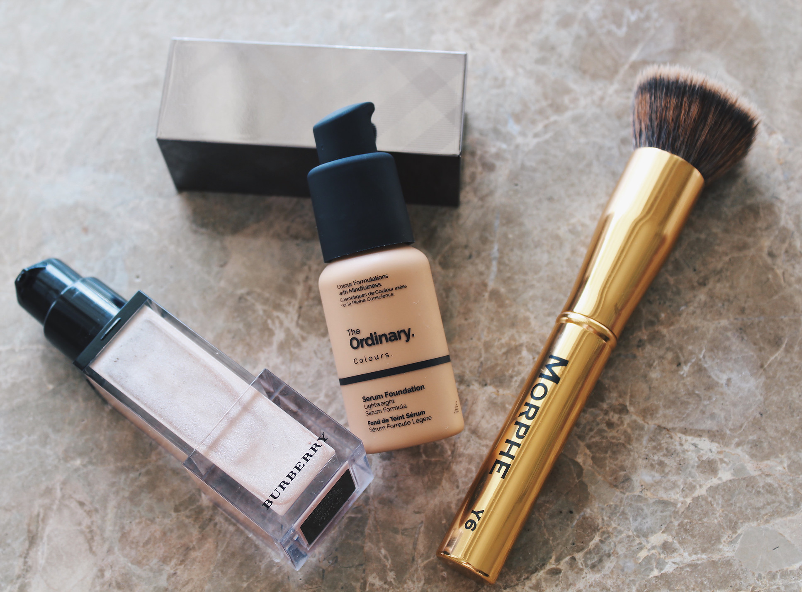
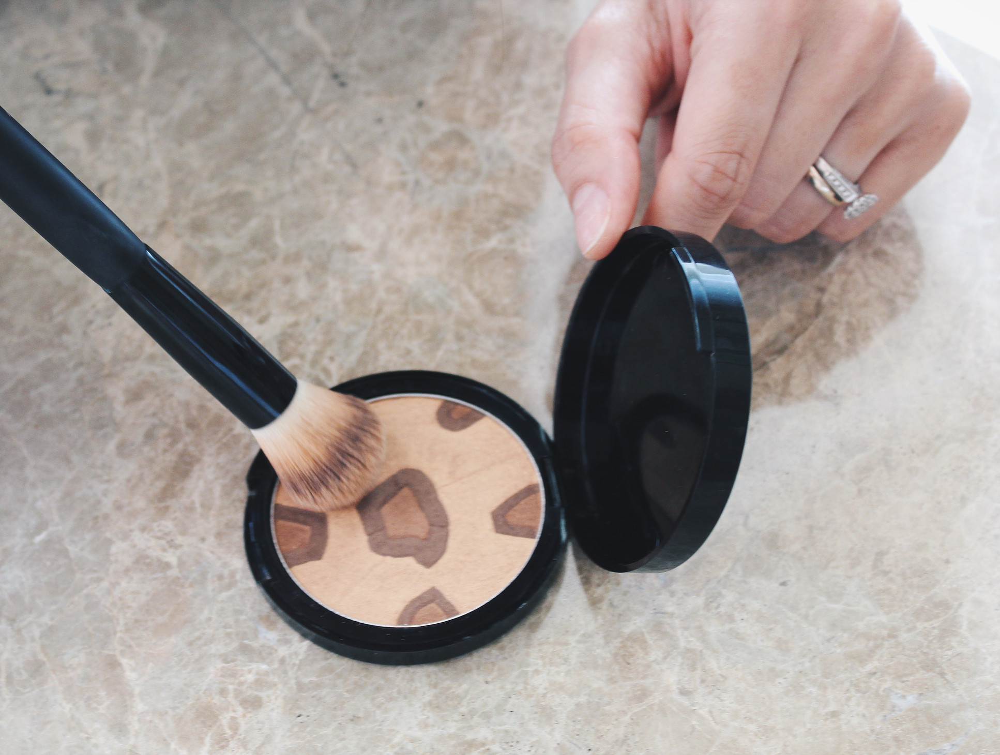
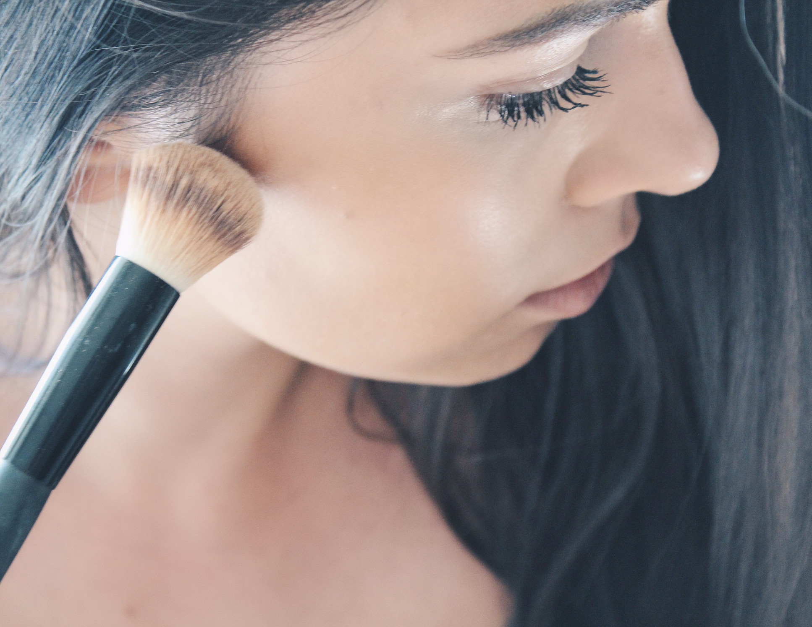
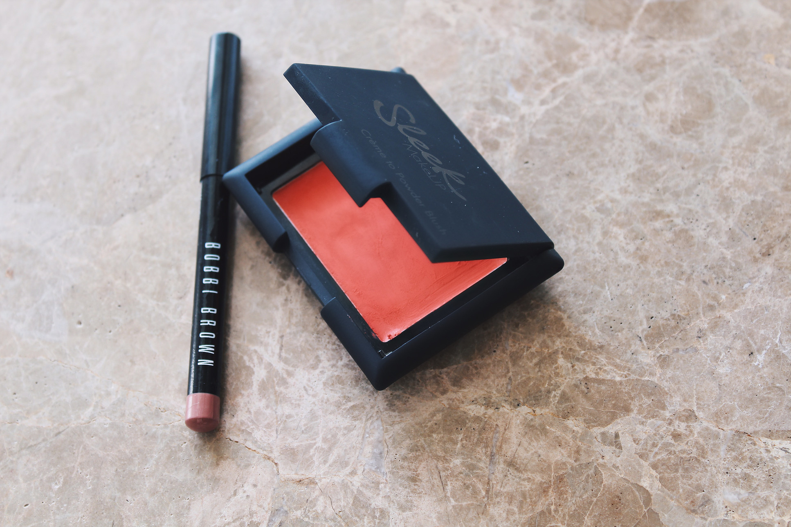
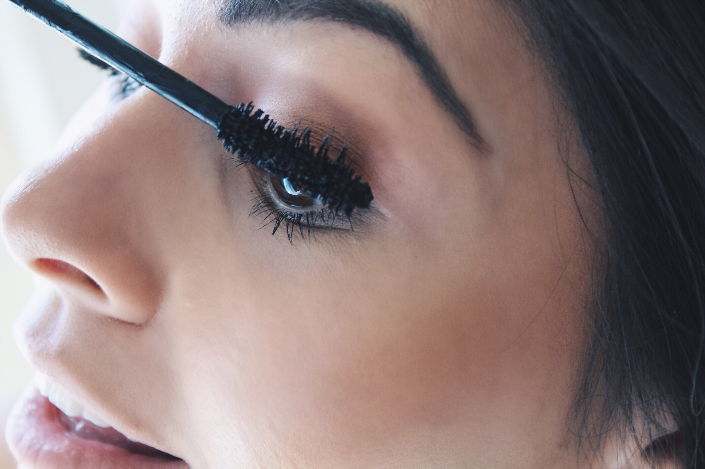
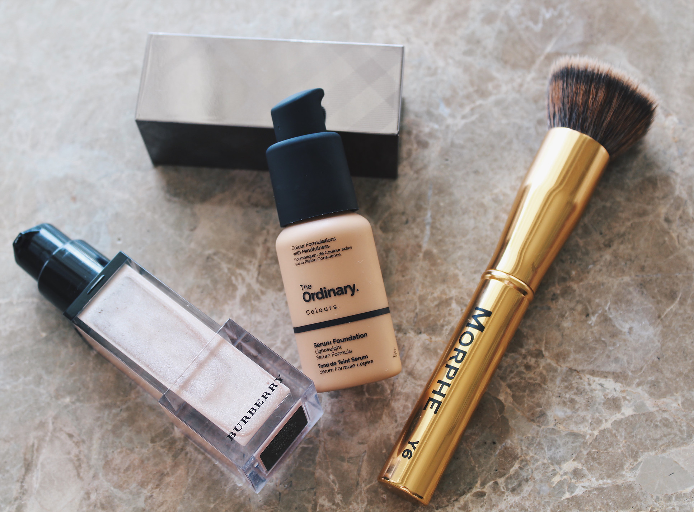
I start with my Burberry Fresh Glow Luminous Fluid primer, which is amazing at giving the skin a glowing, sun-kissed look. Even with foundation layered over it, it still has such a beautiful luminosity.
For foundation I have been loving the Deciem, The Ordinary Colour Serum Foundation. It has been causing an uproar ever since it sold out the first time, and I can see why. It feels very light and has spf 15 to protect my skin from the sun. My favorite brush for applying the foundation is the Y6 from Morphe- it is just the perfect size.
For foundation I have been loving the Deciem, The Ordinary Colour Serum Foundation. It has been causing an uproar ever since it sold out the first time, and I can see why. It feels very light and has spf 15 to protect my skin from the sun. My favorite brush for applying the foundation is the Y6 from Morphe- it is just the perfect size.
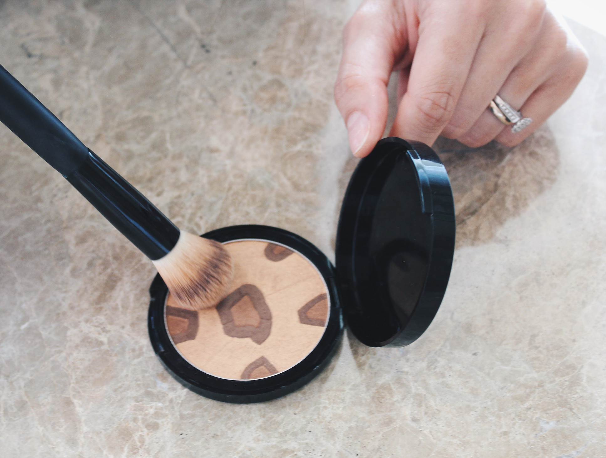
I add some of the Model Launcher Safari Bronzer to warm up the face. It is a really nice cool-toned bronzer. I normally also add some on my eyes to add definition because I often don’t bother bringing a whole eyeshadow pallet when I’m travelling. Using your bronzer on your eyes is a really nice trick, and also make the whole makeup look come together.
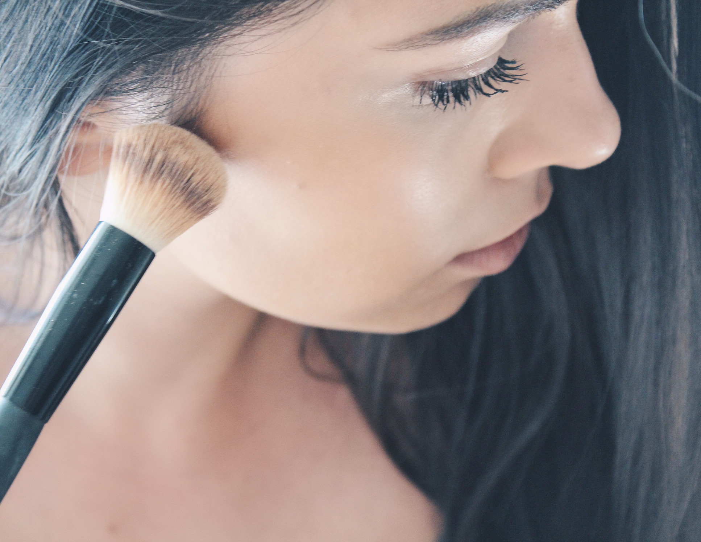
On the cheeks I use the Creme to Powder Blush from Sleek to bring my face to life 😊. It is a more orange colour, which is I think makes it that much more tropical.
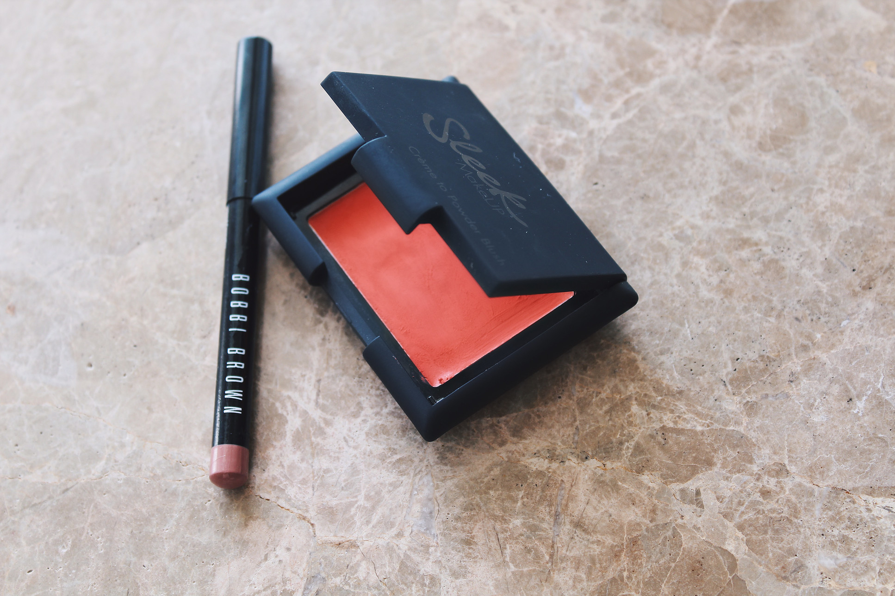
The nude lip- this holiday I have been using the Beige Lip Pencil from Bobbi Brown to both line and fill in my lips. The perfect nude shade.
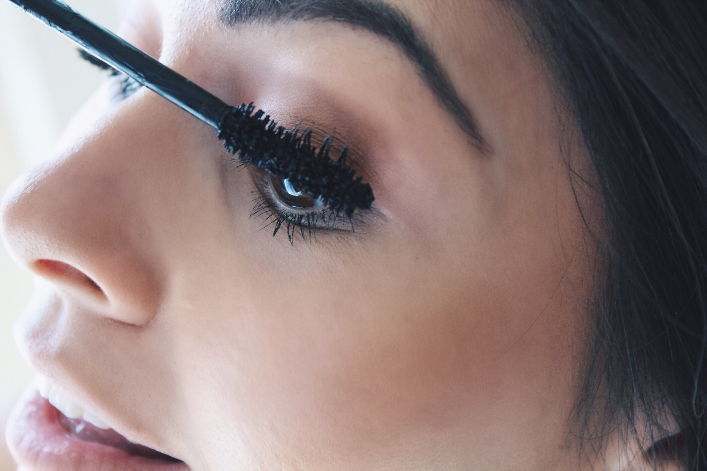
I really don’t do very much on my eyes, but I always add some of my favourite L'Oréal Lash Paradise Mascara (this mascara is life-changing I’m telling you!).
Until next time,